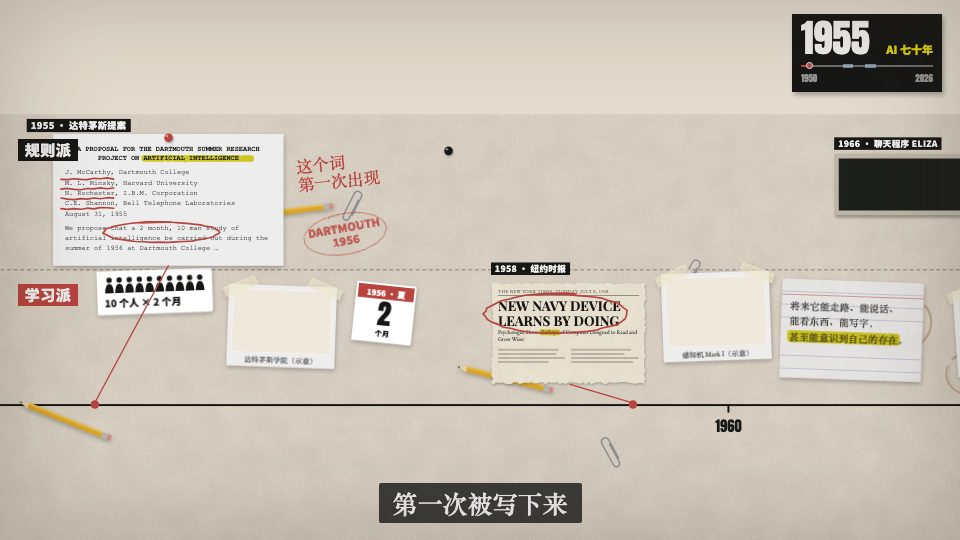

适用：历史线索 / 多线并行
时间尺承载照片与事件，相机跟随同一条因果线。
在我们这里如何使用：镜头平移本身不是论证；每段要有新证据和年份范围。

来自 weilanx README。其作品预览、配方与组件已保存；作者原配音、真人素材和音乐并未在上游公开。
时间尺承载照片与事件，相机跟随同一条因果线。
在我们这里如何使用：镜头平移本身不是论证；每段要有新证据和年份范围。
weilanx-claude-videos 用过和可以用的所有画面风格，按类型分好。做新一期先在这里挑风格，再去对应文件夹看配方卡和代码。
styles/
├── README.md 本表
├── 我的风格/ 已经在用和备好的风格（Remotion，代码在 src/）
├── 艺术风格/ 35 种艺术风格，按流派分 7 组（来自 huashu-art-motion）
└── 解说语法/ 9 种解说动画语法，按用途分 3 组（来自 huashu-art-motion）
| 风格 | 画面特征 | 期数 | 说明 |
|---|---|---|---|
| 像素贴纸风 | 像素小人 + 贴纸风大字（白边硬投影）+ 点阵涂鸦背景；ep06 起竖屏 3:4、首帧封面 | ep05–ep17 | 说明 |
| 像素手绘风 | 像素小人 + 细线手绘卡片，横屏 16:9，演播室 A-roll + B-roll | ep03、ep04 | 说明 |
| 矢量手绘风 | 矢量手绘小人（带嘴、配饰），竖屏 9:16 | ep00–ep02 | 说明 |
| Vox 时间轴长卷 | 解说语法 y2_vox 的落地版：旧纸桌面上一条时间尺、两条泳道，剪报和网点照片钉在年份上，相机沿时间尺追；横屏 16:9，无主持人 | ep18、ep19、ep20 | 代码在 src/library/vox/、src/episodes/ep18-ai-history/、ep19-apple-history/、ep20-nvidia-history/（ep19 起加了贯穿全片的市值命运线） |
| Vox 硬切拼贴（A/B-roll） | 解说语法 y2_vox 的第二种落地：A-roll 是黑卡大字，B-roll 是钉在旧纸桌面上的真实素材（视频、实拍、官方插图），镜头之间按字幕硬切；横屏 16:9，无主持人 | ep21 | 代码在 src/episodes/ep21-nobel-physics/，素材框 src/library/vox/footage.tsx |
| 暗金文献风 | 近黑底 + 暖光晕 + 金色细线和衬线字；左上年份抬头、右上文献引用加朱红小印，字幕重点词变金；元素模糊柔入，图表是逐步画出的金线；横屏 16:9 | ep23、ep24、ep32 | 说明，代码在 src/library/gilded/ |
| 网点档案风 | 米白旧纸 / 藏青夜色 + 渐变网点；粗宋大字带粉红错版投影，左上案卷号、右上日期章；元素弹入、印章砸下、网点淹没转场；横屏 16:9 | 还未使用 | 说明，代码在 src/library/halftone/ |
| 战术屏科普风 | 深蓝黑游戏 HUD 框 + 低多边形 3D 射击场 + 青红橙发光图表；字幕逐字浮现、关键词变色下划线；红屏裂纹死亡、黑场白闪揭晓；横屏 16:9，FPS 科普 | ep25、ep29、ep31、ep33、ep35、ep37、ep39、ep40、ep42、ep43、ep45、ep47、ep48、ep49、ep50、ep51 | 说明、爆款解析，代码在 src/library/tactical/ |
| 暖纸工作台风 | 暖米色点阵纸（柔光晕）+ 白色窗口卡片和主视觉图形 + 粗黑体标题朱橙块高亮 + 顶部步骤条；右下角像素吉祥物常驻，可加左下角真人出镜小窗；几乎不硬切，卡片滑走 / 上浮换内容；横屏 16:9，口播流程拆解 | ep26 | 说明，代码在 src/library/warm-desk/ |
| 灯火史话风 | 暖黑夜色 + 火光 + 米白象形小人；左上角宋体 Black 叙述逐字收拢写出，关键词蓝（名词）/ 红（惩罚）/ 金（火、数量）三色划线，右上大数字滚动；透视城市逐格亮灯、烽燧逐个点燃、地形图上发光路径、纸卷律文；暗场溶解 / 穿光转场；横屏 16:9，古代制度科普 | ep28、ep30、ep34、ep41、ep46 | 说明，代码在 src/library/lamplight/ |
| 黑金光影风 | 近黑底 + 暖色烟雾，一切发光：金粒子聚成标题 + 漂浮公式，霓虹描边收益矩阵（青 = 合作、红 = 背叛、金箭头依次画出），聚光灯下的发光小人、前景大剪影观众，细胞网格 / 光点网络 / 霓虹曲线；底部中英双语字幕；横屏 16:9，博弈论、经济学、认知、AI 原理 | ep36、ep38 | 说明，代码在 src/library/blackgold/ |
| 协作剪辑台风 | 暖米白软件界面一镜到底：左侧群聊一问一答、中间画布播概念演示（粗黑体大标题 + 荧光笔关键词、网页示意、功能卡弹胶囊）、底部时间轴上几何小角色当协作者光标拖片段；荧光黄绿唯一重点色；结尾 logo 收尾卡；横屏 16:9，网站 / 产品宣传动画 | 还未使用 | 说明，代码在 src/library/editor-room/ |
每个文件夹里有三样：配方卡.md（渲染手法、母题动作、转场、踩过的坑）、场景代码.js（huashu-art-motion 引擎的场景文件）、预览.jpg。质量一栏照原版：★★★ 一眼认得、可直接用；★★ 认得出但有明显短板；★ 要重做。
| 风格 | 画怎么活 | 质量 | 当前短板 |
|---|---|---|---|
| 01_cave_洞穴岩画 | 动物两姿态交替奔跑、火光摇曳、余烬 | ★★★ | 人形太卡通，不够原始 |
| 02_egypt_埃及壁画 | 圣甲虫推日、阿顿光线小手开合、象形字逐笔重写 | ★★★ | 端杯肘偏僵 |
| 03_greek_古希腊黑绘 | 回纹带反向滚动、船起伏海豚跃、里拉琴摆 | ★★★ | 裙摆偏厚 |
| 04_roman_罗马马赛克 | 波浪纹边框顺时针流、维苏威冒烟溅火星 | ★★★ | 小尺度下脸部细节少 |
| 05_gothic_哥特手抄本 | 金箔斜向高光扫过、藤蔓摇、蜗牛爬、老鼠跑 | ★★★ | 金发像兜帽 |
| 17_ink_水墨写意 | 开场笔触自己写出、墨晕扩散、虾须动 | ★★ | 人物不够写意（审片 6/10） |
| 20_dunhuang_敦煌壁画 | 飞天飘带、天花飘、灯焰 | ★★ | 飞天造型粗 |
| 34_shadowpuppet_皮影 | 杆子操控僵直关节、手腕甩 | ★★★ | 重叠处相乘发黑；121ms 偏慢 |
| 风格 | 画怎么活 | 质量 | 当前短板 |
|---|---|---|---|
| 06_renaissance_文艺复兴 | 达芬奇扑翼机飞过、河面碎光、浮尘 | ★★ | 猫偏卡通；整体偏静 |
| 32_rembrandt_伦勃朗明暗 | 光柱浮尘、云影让窗光明暗 | ★ | 人物扁平（审片 5/10），最该重做 |
| 风格 | 画怎么活 | 质量 | 当前短板 |
|---|---|---|---|
| 08_impressionism_印象派 | 光斑漂移明灭、罂粟摇、云走、丝带飘 | ★★ | 脸和手被笔触打碎 |
| 09_postimp_梵高 | 星空漩涡、灯晕环外扩、方向场火苗般摇曳、漩涡猫 | ★★★（标杆） | 每帧 120ms 最重 |
| 28_monet_莫奈 | 睡莲漂、柳影晃、涟漪扩散 | ★★ | 墙是池水、地是木头的空间别扭 |
| 29_seurat_修拉点彩 | 光渗、点在呼吸 | ★★ | 偏静；网格规整 |
| 风格 | 画怎么活 | 质量 | 当前短板 |
|---|---|---|---|
| 10_nouveau_慕夏新艺术 | 太阳升起、光环转、花摇、S 形热气、卷发波 | ★★★ | 猫姿势僵 |
| 11_cubism_立体主义 | CAFÉ 字母跳换、窗格碎面滑、报纸颤 | ★★ | 偏亮，深褐大面不够 |
| 12_bauhaus_包豪斯 | 指针杆转陡、蒙德里安格换色、猫拨球 | ★★★ | 猫头偏离骨架位 |
| 18_klimt_克里姆特 | 袍上眼形纹轮流眨、金屑飘 | ★★★ | 桌上的手没接袖子 |
| 19_munch_蒙克 | 整幅画扭动、血色天空流 | ★★ | 墙面曾被读成梵高 |
| 22_constructivism_构成主义 | 标语逐字盖章再波浪跳 | ★★★ | 缺喇叭形文字锥 |
| 23_dali_达利超现实 | 钟往下流、长腿象走、蚂蚁绕表、影子变长 | ★★ | 人物偏矢量插画 |
| 24_hopper_霍珀 | 光斑缓移扫过脸、墙上人影同步喝茶 | ★★★ | 猫全程在阴影里 |
| 30_matisse_马蒂斯剪纸 | 纸片飘动、海藻摆 | ★★★ | 水粉刷痕偏重 |
| 36_picasso_blue_毕加索蓝色时期 | 缓慢呼吸 | ★★ | 造型不够忧郁 |
| 风格 | 画怎么活 | 质量 | 当前短板 |
|---|---|---|---|
| 13_pop_波普艺术 | 沃霍尔四格换色、思考点闪、猫扭臀、拟声框抖 | ★★★ | — |
| 21_kusama_草间弥生波点 | 波点从猫处一圈圈胀缩、南瓜、无限镜屋 | ★★★ | 人物与墙同色靠轮廓撑 |
| 27_kirby_漫威Kirby | 拟声大字、分格猫眼特写、能量点 | ★★ | 更像利希滕斯坦，缺 Kirby 透视与方块手 |
| 31_haring_哈林涂鸦 | 小人按 8fps 硬切跳舞、一切跟 BPM 弹跳 | ★★★ | 少女不够哈林 |
| 风格 | 画怎么活 | 质量 | 当前短板 |
|---|---|---|---|
| 16_2026_当代扁平插画 | 角色表演（跳/拍杯/碎裂/惊呼/签名）、阻尼二次动作 | ★★★ | — |
| 25_ghibli_吉卜力水彩 | 纱帘被风鼓起、草叶成片摆、树影光斑 | ★★ | 人物不如背景 |
| 33_rubberhose_橡皮管卡通 | 一切按节拍弹跳 | ★★★ | 运动大半是胶片噪声 |
| 35_shinkai_新海诚光影 | 光粒飘、云移 | ★★ | 室内背景密度不够 |
| 风格 | 画怎么活 | 质量 | 当前短板 |
|---|---|---|---|
| 14_8bit_8-bit像素 | 尾巴、HUD 心闪、问号块顶金币（15–30fps 步进） | ★★★ | 猫头压窗台 |
| 15_raytrace_早期光追CGI | 紫环旋转、镜头光晕、猫眼绿光 | ★★ | 猫腿直柱、脸像面具 |
| 26_vaporwave_蒸汽波 | 落日横条上移、网格前滚、招牌闪、跟踪噪声带 | ★★★ | 部件交界也发光 |
每个文件夹里有 语法卡.md、预览.jpg，能参数化出片的还有 片段代码.js、参数示例.json 和 示范工程/。
| 语法 | 一句话 |
|---|---|
| t1_3b1b_3Blue1Brown | 一个对象形变成下一个 |
| y1_kurzgesagt_Kurzgesagt | 扁平无描边、尺度穿行 |
| y3_whiteboard_白板 | 笔尖揭开线稿，适合跟着口播画关系 |
| 语法 | 一句话 |
|---|---|
| t2_keynote_ui_发布会 | 光斑底、毛玻璃卡、大数字 |
| t3_finance_chart_财经图表 | 先轴、后数据、只标一件事 |
| y2_vox_Vox | 剪报、红线、荧光笔，信息拼贴 |
| 语法 | 一句话 |
|---|---|
| y4_storytime_Storytime | 反应特写、笑点停顿 |
| y5_kinetic_type_动态文字 | 主词砸进来 |
| y6_presenter_explainer_讲解员 | 讲解员式财经科普（只有语法卡，整片代码需自备角色） |
src/library/，流程见根目录 CLAUDE.md 和 weilanx-creator-pixel-video Skill。~/.claude/skills/huashu-art-motion/scripts/engine/（已安装为 Skill），这里放的是配方和场景代码，方便挑风格、对照和移植。src/library/。艺术风格和解说语法来自 alchaincyf/huashu-art-motion（MIT，见 LICENSE-huashu-art-motion），整理于 2026-10-07。字体等第三方资源的许可在 Skill 目录 scripts/engine/lib/fonts/LICENSES.md。